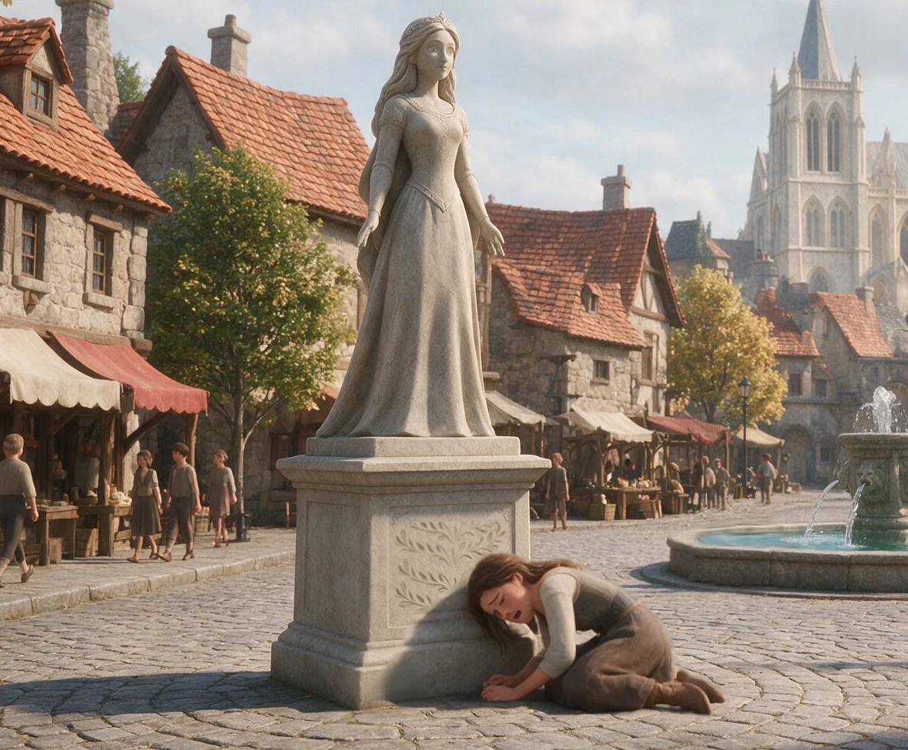

Mave and Laura: A True Sacrifice

Princess Mave of Merridale possessed a rare magical gift: she could transform anything into stone. She and her younger sister, Laura, spent countless happy hours playing in the royal gardens, racing stone tomatoes down the hills. One afternoon, Laura was carrying a watermelon when Mave decided to play a harmless prank by turning it to stone. The fruit instantly grew heavy, slipped from Laura's hands, and landed on her foot, fracturing it. When Mave tried to help, she accidentally turned Laura's foot into stone.
Terrified, Mave rushed to her parents, who took Laura to Merlin, the kingdom's wise wizard. He restored her foot, then explained that Mave's magic was fueled by her emotions -- the stronger she felt, the stronger her powers grew. Unless she learned self-control, she might someday hurt Laura permanently. Frightened of another accident, the King and Queen separated the sisters. Mave withdrew from everyone, and as the years passed, the once inseparable sisters grew distant.
When Mave turned twenty-one, the royal family held a magnificent birthday celebration. There, Laura met the handsome Prince Marcus, and the two fell in love almost immediately. Before the night ended, Marcus proposed, and Laura happily accepted. When the couple asked for Mave's blessing, she refused, warning that they were rushing into marriage. The sisters argued, and Mave's emotions spiraled out of control. Stone spread from her magic, turning tables, chairs, and even the feast to marble. Horrified, Mave fled into the western mountains.
There, Mave slowly accepted her powers and built a marble palace of her own. But the magic she had released kept spreading, slowly turning all of Merridale to stone. Determined to save everyone, Laura searched the mountains until she found her sister. Mave was overcome with guilt -- she had no clue how to undo the damage. When she panicked and accidentally touched Laura's arm, it too began turning to stone. Laura rushed to Merlin for help, while Mave stayed behind, paralyzed by fear. She was afraid of causing more damage.
Merlin warned Laura that unless the spell was broken, she would eventually turn fully to stone. The only cure, he said, was an act of true love. Laura rushed to Marcus, hoping his kiss would save her. They shared a heartfelt kiss, but nothing happened. As the stone crept further up her arm, Laura realized she was running out of time.
Meanwhile, Mave finally conquered her fear. She raced back to Merridale, found Laura, and, through tears, begged for forgiveness. Gently holding her sister's stone arm, she looked into her eyes and whispered, "I love you." Then she closed her eyes and poured her whole soul into a single wish: that every trace of her stone magic be undone.
Laura's arm slowly returned to flesh, and across Merridale the stone vanished. But when Laura looked up, she saw that Mave herself had turned into a stone statue. Laura fell at her sister's feet and wept, understanding that Mave had willingly sacrificed herself to save both her and the kingdom. To this day, Mave's statue still stands in the town square, a reminder that the greatest magic of all is selfless love.